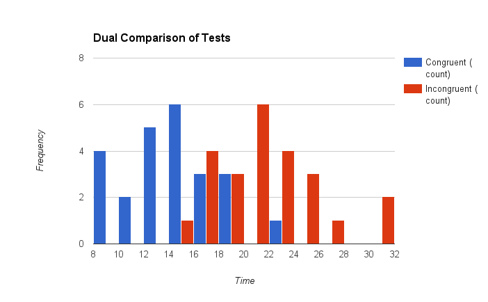

Dependent variable: This is the time recorded for participants to complete eithere tasks--to read the colour of the ink, with the congruent and incongruent set. The independent variable is the word conditions, whether they are congruent or not. The word conditions are controlled by the proctors and program, thus, as the independent variable, are used to find results.
H0: μincongruent- μcongruent = 0
Halt: μincongruent- μcongruent > 0
To better explain this in terms of the population, we want to see if the average difference between the congruent values and incongruent values is statistically significant. Therefore our null hypothesis is that the difference between the two tests for the average population is zero.
Our alternative hypothesis will be that the incongruent mean is greater than the congruent mean, and that therefore the average population response time is greater than zero.
Based off these hyposthese, we will conduct a one-tailed t-test for the p-value.
The kind of statistical test do I expect to perform will be based on the difference in time between the congruent and incongruent test. I will be performing a dependent-samples t-test, with a one-tailed t-test for the p value. It will be a dependent t-test since we do not have population parameters, and we want to see if the time spent is positively increasing the results. The subjects in both tests are the same, therefore we have two related groups of the same subjects, and we are testing for an increase in the time recorded within the subjects.
Given the sample data set, I was able to calculate a sample mean and median.

Here is a graph displaying both of the test results by frequency and time. I chose to use both data sets on one graph because it reflects a rather consistent pattern--the incongruent values are in a relatively similar shape to the congruent values, but shifted to the right.
From the previous descriptives, we know that μcong = 14.05, and that μincong=22.02, which we will label as x̄. Given these, the mean difference is x̄ - μcong = 7.96. n = 24, therefore the degree of freedom, ie df = 23. I chose an alpha level of .05 to reflect the critical region, which gave us a t-critical value of 1.714.
At this point, this is all the information we had, and were able to calculate the t-statistic.